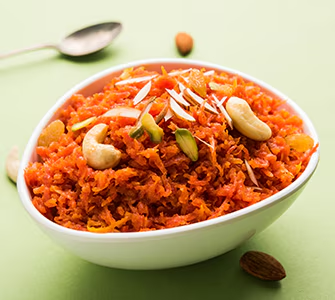

Gajar ka Halwa is a rich, creamy, and warm Indian carrot pudding dessert, traditionally made during winter and festive occasions like Diwali. It is prepared by slow-cooking grated carrots with ghee, milk, sugar, and cardamom powder until it reaches a thick, caramelized pudding texture. It is often garnished with cashews, almonds, and pistachios